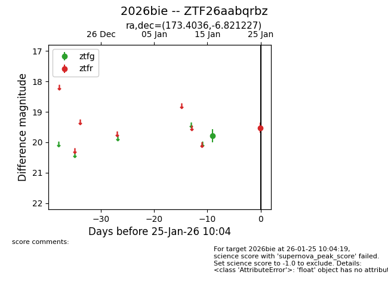
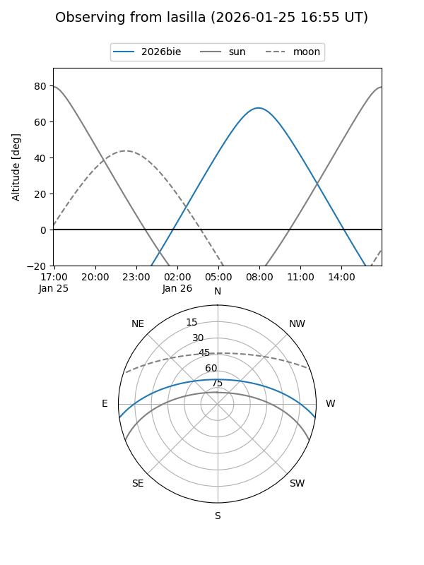
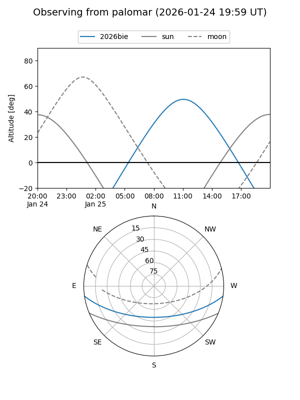

2026bie
Target 2026bie at 2026-01-25 10:06
Aliases and brokers:
FINK: link
Lasair: link
ALeRCE: link
TNS: link
YSE: link
alt names
ZTF26aabqrbz (ztf,fink_ztf)
2026bie (tns,yse)
Coordinates:
equatorial (ra, dec) = 173.4036,-6.82123
equatorial (HMS+DMS) = 11:33:36.87,-06:49:16.42
galactic (l, b) = (271.0938,+51.17554)
Flags:
Photometry:
last ztfg=19.78, ztfr=19.52
1 ztfg, 1 ztfr detections
Lightcurve

Visibility


Additional plots